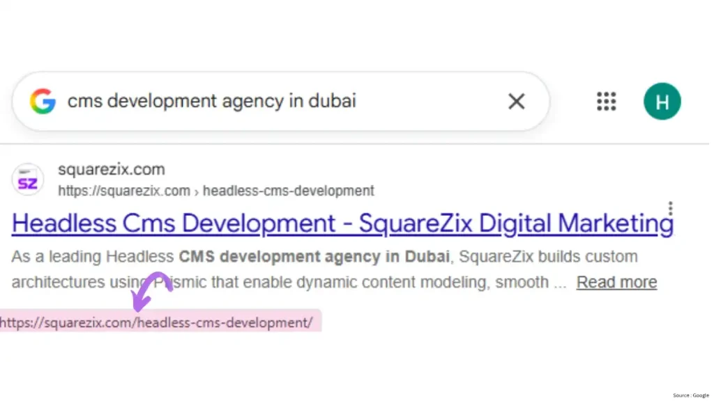
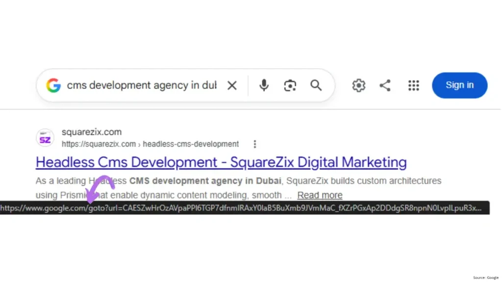

Google Search is rolling out a new google.com/goto URL redirect mechanism that changes how some search-result links are handled before users reach the destination website. Google has confirmed that the rollout is part of its broader effort to deploy technical measures against evolving forms of abuse and protect its services and users.
For website owners and SEO professionals, the important point is this: google.com/goto is not currently known to be a Google ranking update. The change primarily introduces an intermediary redirect between a Google Search result and the website it leads to. This could have greater implications for SERP tracking, automated tools, scraping and search-data collection than for the rankings of individual websites.
What Is Google’s goto URL Redirect?
Traditionally, clicking a Google Search result would take a user directly to the destination page.
Traditional path:
Google Search → Website

With the new redirect mechanism, some results may follow this path:
New path:
Google Search → google.com/goto → Website
The google.com/goto URL acts as a passthrough before the visitor reaches the final destination. Reports about the mechanism first emerged during testing in 2026, and Google has now confirmed that the rollout is taking place.

For most users, the experience may be almost invisible because the final destination remains the same.
Why Is Google Introducing google.com/goto?
Google has not publicly described every technical detail behind the system. Its official explanation is that it regularly deploys technical measures to address evolving forms of abuse and protect its services and users.
However, the change has attracted significant attention from the SEO industry because intermediary URLs can make automated extraction of search-result destinations more difficult.
SEO platforms, SERP trackers and other automated systems often need to process large volumes of Google Search results. A redirect layer can introduce another technical step between the search result and the final URL.
This means the change is potentially more significant for large-scale SERP data collection and automated search monitoring than for ordinary website visitors.
Does Google goto Affect SEO Rankings?
There is currently no evidence that the google.com/goto redirect itself is a ranking factor or ranking penalty.
This distinction is important.
Google’s ranking systems determine which pages appear in Search and in what order. The goto mechanism changes how a search-result click is routed after the result is displayed.
Therefore, website owners should not assume that seeing a google.com/goto URL means their rankings have dropped, their website has been penalized or their SEO strategy needs to change.
Instead, businesses should continue focusing on the fundamentals of SEO services in Dubai, including technical SEO, useful content, website performance, search intent and overall search visibility.
Could Google goto Affect SEO Tools and Rank Tracking?
This is one of the areas worth watching most closely.
Rank trackers and SERP platforms may need to adapt if Google increasingly uses server-side redirects instead of exposing destination URLs directly in search-result links. Industry observers have reported that automated systems may need to follow these redirects to determine the actual destination URL.
For SEO teams, this could potentially affect:
- SERP scraping
- Rank tracking
- Competitor monitoring
- Automated keyword research
- SERP APIs
- Search-result URL extraction
- AI-powered search monitoring
The impact will depend on how individual tools respond to Google’s technical changes.
Does google.com/goto Affect Google Search Console?
There is currently no indication that website owners need to change their Google Search Console setup because of this redirect mechanism.
Your website’s actual URLs, indexing and on-page SEO remain separate from the intermediary URL used within Google’s Search interface.
However, SEO teams should continue comparing Google Search Console data, analytics data and third-party SEO platforms. If one reporting platform suddenly shows unusual traffic, ranking or attribution patterns, the cause should be investigated before making SEO changes.
This is particularly important for businesses investing in technical SEO services in Dubai from SquareZix and relying on multiple data sources to measure organic performance.
Is Google goto Related to AI Search and Scraping?
This is an area where it is important to separate confirmed information from industry interpretation.
Google has confirmed that the change is part of its technical measures against evolving forms of abuse. It has not publicly stated that google.com/goto was introduced specifically to block AI companies.
Nevertheless, the mechanism could make automated processing of Google Search results more technically demanding.
That matters because modern search data is increasingly consumed by SEO platforms, automated systems and AI-related applications. A server-side redirect can add another step for systems attempting to collect and process search-result URLs at scale.
For businesses, this reinforces an important SEO lesson: search visibility should not depend entirely on one tracking tool or one measurement method.
What Should Website Owners Do?
For most website owners, there is no reason to panic or change website URLs because of Google’s goto rollout.
Instead:
- Keep your existing website URLs.
- Do not create redirects specifically to accommodate Google’s goto URLs.
- Continue monitoring Google Search Console.
- Compare organic traffic across your analytics platforms.
- Check whether your rank-tracking tools report any changes.
- Monitor important keywords and landing pages.
- Continue investing in technical SEO and high-quality content.
If your website needs broader performance improvements, website development services and ongoing website management from SquareZix can help ensure that technical issues do not become a separate barrier to search visibility.
What Does Google’s goto Update Mean for Businesses?
The biggest takeaway is simple: Google’s goto redirect is primarily a change to the search-result click pathway, not a confirmed change to how websites are ranked.
For users, the difference may be barely noticeable. For SEO platforms, rank trackers and systems that process Google Search results at scale, the technical implications could be considerably more important.
Businesses should therefore avoid reacting to the redirect itself. Instead, monitor rankings, traffic, conversions and reporting consistency.
As Google Search continues evolving toward a combination of traditional results, AI-generated answers and new search experiences, maintaining a technically strong website and a diversified search strategy is becoming increasingly important. A comprehensive SEO strategy for your website should focus on sustainable visibility rather than chasing every individual Google interface change.
Frequently Asked Questions
What is google.com/goto?
google.com/goto is an intermediary URL that Google is rolling out for some Search result links. It can redirect users from a Google Search result to the final destination website.
Is Google goto a ranking update?
No evidence currently shows that google.com/goto is itself a ranking update. Google has described the rollout as a technical measure related to protecting its services from evolving forms of abuse.
Does Google goto hurt website rankings?
There is currently no evidence that the redirect mechanism directly lowers website rankings. Website owners should continue monitoring their normal SEO performance rather than assuming a ranking loss because of the new URL format.
Will google.com/goto affect SEO tools?
It may affect some tools that collect or process Google Search results at scale. Rank trackers, SERP APIs and automated search-data systems may need to adapt to Google’s redirect behavior.
Do website owners need to change their URLs?
No. Website owners do not need to create special redirects or change their website URLs because Google is using google.com/goto in Search.
What should businesses do now?
Continue monitoring rankings, organic traffic, conversions and Search Console data. If third-party SEO tools show unusual results, verify the data before changing your SEO strategy.
Bottom line: Google’s goto URL redirects are an important technical change to watch, but they are not a reason for businesses to panic about SEO. The smarter approach is to monitor your search data, maintain a technically healthy website and build a search strategy that can adapt as Google Search continues to evolve.